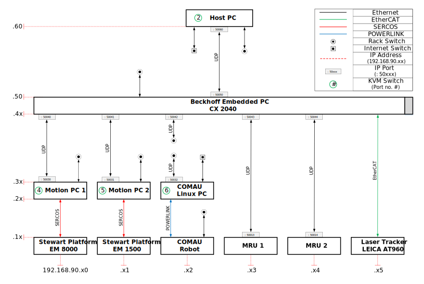

Internal Communication¶
This section presentes the communication structure and setup of the Motion-Lab. The laboratory consist of two Stewart Platforms (E-Motion 8000 and 1500), an industrial robot (COMAU Smart 5 NJ 110-3.0), two Motion Reference Units (MRU), a laser tracker (Leica AT960), a motion capture system (Qualisys Oqus 700+), and an embedded PC (Beckhoff CX2040) working as a central control unit.
Structure and Setup¶
A total of 7 PC’s, are currently installed on the Motion-lab:
- Two motion PC’s which are connected to the Stewart Platforms
- Linux platform responsible for the industrial COMAU robot
- Motion Capture PC, connected to the Qualisys motion capture system
- The embedded PC (Beckhoff CX2040), which is a combination of an industrial PC and a hardware PLC
- Real-Time Target PC
- Host PC, used as the user interface
Ethernet¶
A schematic of the communication structure is illustrated in the figure below, where the lowest level represents the installed hardware components.
As the figure shows, different connections use different communication protocols,
where each component has been assigned one or more static IP addresses, and communication ports.
All of the systems have been assigned IP addresses on the form: 192.168.90.xx,
where the two last digits xx, are determined by the row and column number, respectively.
This is illustrated in the figure by the red dashed lines.
It should be noted, that some of the components has several communication interfaces,
hence multiple IP addresses.
Two network switches are installed in the system.
“Internet Switch” is used for internet connection, where the components are connected with dynamic IP addresses.
The “Rack Switch” is used for internal connection between the components,
where the components are assigned static IP addresses, on the form: 192.168.90.1xx where the two last digits,
correlates to direct connection.
(e.g. Host PC has an IP Address: 192.168.90.60 for connection to the Beckhoff embedded PC/PLC,
and IP Address: 192.168.90.160 for the “Rack Switch” connection.)
The table shown below lists all of the connections for each component, with the respected protocol, IP address and port.
| Component: | Protocol: | IP address: | Port: | Connection Description: |
|---|---|---|---|---|
| Stewart Platform - EM 8000 | SERCOS | 192.168.90.10 | Motion PC 1 | |
| Stewart Platform - EM 1500 | SERCOS | 192.168.90.11 | Motion PC 2 | |
| COMAU Robot | POWERLINK | 192.168.90.12 | COMAU PC | |
| Ethernet | 192.168.90.112 | Rack Switch | ||
| MRU 1 | UDP | 192.168.90.13 | 50013 | Beckhoff PC/PLC |
| MRU 2 | UDP | 192.168.90.14 | 50014 | Beckhoff PC/PLC |
| Laser Tracker - Leica AT960 | EtherCAT | 192.168.90.15 | Beckhoff PC/PLC | |
| Motion PC 1 | SERCOS | 192.168.90.20 | EM 8000 | |
| UDP | 192.168.90.30 | 50030 | Beckhoff PC/PLC | |
| Ethernet | 192.168.90.130 | Rack switch | ||
| Motion PC 2 | SERCOS | 192.168.90.21 | EM 1500 | |
| UDP | 192.168.90.31 | 50031 | Beckhoff PC/PLC | |
| Ethernet | 192.168.90.131 | Rack switch | ||
| COMAU PC | POWERLINK | 192.168.90.22 | COMAU Robot | |
| UDP | 192.168.90.32 | 50032 | Rack Switch | |
| Ethernet | Internet Switch | |||
| Beckhoff Embedded PC | UDP | 192.168.90.40 | 50040 | Motion PC 1 |
| UDP | 192.168.90.41 | 50041 | Motion PC 2 | |
| UDP | 192.168.90.42 | 50042 | Rack Switch | |
| UDP | 192.168.90.43 | 50043 | MRU 1 | |
| UDP | 192.168.90.44 | 50044 | MRU 2 | |
| EtherCAT | 192.168.90.45 | 50045 | Leica AT960 | |
| UDP | 192.168.90.50 | 50050 | Host PC | |
| Ethernet | 192.168.90.150 | Rack switch | ||
| Host PC | UDP | 192.168.90.60 | 50060 | Beckhoff PC/PLC |
| Ethernet | 192.168.90.160 | Rack Switch | ||
| Ethernet | Internet Switch |
Analog and Digital I/O¶
In addition to the ethernet communication, the central control unit (Beckhoff CX2040) have analog- and digital I/O-modules. This allows for easy connection to external devices. The figure below illustrates the installed modules and the connection configuration of the installed analog and digital devices.

The table below lists the installed modules, with the related specification, and the connected devices.
| Module: | Type: | Range: | Connection: | Device/Component: |
|---|---|---|---|---|
| EL4134 | Analog Output | -10 .. +10 V | Out 1 | Device 1 |
| Out 2 | Device 2 | |||
| Out 3 | Device 3 | |||
| Out 4 | Device 4 | |||
| EL3104 | Analog Input | -10 .. +10 V | In 1 | Device 1 |
| In 2 | Device 2 | |||
| In 3 | Device 3 | |||
| In 4 | Device 4 | |||
| In 5 | Device 5 | |||
| In 6 | Device 6 | |||
| In 7 | Device 7 | |||
| In 8 | Device 8 | |||
KVM Switch¶
All the presented PC’s are connected to a KVM switch, with the exception of the Beckhoff PC/PLC (which is controlled by a remote desktop connection).
The KVM switch allows for control of all the installed PC’s from the master keyboard.
To activate the desired computer, use the command combination: CTRL + F12 + # + ENTER, where # is the port number.
Available systems are listed in the table below, with the related port number.
| System: | Port Number: |
|---|---|
| External Connection | 1 |
| Host PC | 2 |
| Motion Capture PC: Qualisys | 3 |
| Motion PC: EM 8000 | 4 |
| Motion PC: EM 1500 | 5 |
| Linux PC: COMAU | 6 |
| Spare connection (not in use) | 7 |
| Spare connection (not in use) | 8 |